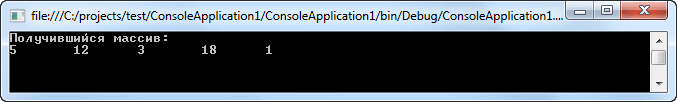

| Тема 3. Перегрузка индексаторов. | ||
| Назад | ||
|
Индексатор может быть перегружен. В этом случае для выполнения выбирается тот вариант индексатора, в котором точнее соблюдается соответствие его параметра и аргумента, указываемого в качестве индекса. Имейте в виду, что индексаторы могут быть перегружены в отдельном классе или структуре. То есть если имеет смысл позволить вызывающему коду обращаться к подэлементам с использованием числового индекса или строкового значения, в одном и том же типе можно определить несколько индексаторов. Например, если вы когда-либо программировали с применением ADO.NET (встроенный API-интерфейс .NET для доступа к базам данных), то вспомните, что тип DataSet поддерживает свойство по имени Tables, которое возвращает строго типизированную коллекцию DataTableCollection. В свою очередь, в DataTableCollection определены три индексатора для получения объектов DataTable — по порядковому номеру, по дружественным строковым именам и необязательному пространству имен. Давайте рассмотрим пример использования перегрузки индексаторов: using System;
using System.Collections.Generic;
using System.Linq;
using System.Text;
namespace ConsoleApplication1
{
class MyArr
{
int[] arr;
public int Length;
public MyArr(int Size)
{
arr = new int[Size];
Length = Size;
}
public int this[int index]
{
get
{
return arr[index];
}
set
{
arr[index] = value;
}
}
// Перегружаем индексатор
public int this[double index] //индексатор из вещественного числа
{
get
{
return arr[(int)Math.Round(index)];
}
set
{
arr[(int)Math.Round(index)] = value; //метод округляет до целого числа
}
}
}
class Program
{
static void Main(string[] args)
{
MyArr arr = new MyArr(5);
arr[0] = 5;
arr[1.235] = 12;
arr[2] = 3;
arr[3.045] = 18;
arr[3.9] = 1;
Console.WriteLine("Получившийся массив: ");
for (int i = 0; i < arr.Length; i++)
Console.Write("{0}\t",arr[i]);
Console.ReadLine();
}
}
}
Применение перегрузки индексаторов в C#  Представленный выше пример программы наглядно демонстрирует правомочность перегрузки индексаторов, но на практике она применяется нечасто. Как правило, индексаторы перегружаются для того, чтобы использовать объект определенного класса в качестве индекса, вычисляемого каким-то особым образом. Следует отметить, что множество типов из библиотек базовых классов поддерживают индексаторы. Поэтому, даже если текущий проект не требует построения специальных индексаторов для классов и структур, помните, что многие типы уже поддерживают этот синтаксис. | ||
| Конспект подготовлен Бакулиным А. М. 2022 год. | ||